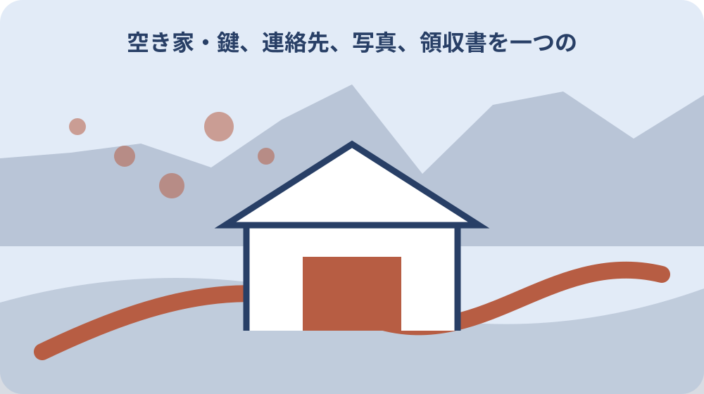

先に結論を確認する
この記事の答え：登録番号、現在の公開内容、終了理由、交渉中の相手、未回答質問、鍵、設備、残置物、公開終了後の管理担当を一枚にします。その上で内容変更か登録抹消かを定住推進課へ確認してください。
森町で最初に照合する条件：変更届と抹消届を目的別に分ける
変更か抹消かを決める前に現在地を一枚へ戻す
森町の空き家・空き地バンクで公開中の所有者が、売却・賃貸条件を変えたい、交渉が進んだ、家族事情で公開を止めたいと考えたら、いきなり掲載終了だけを頼みません。登録番号、公開内容、変更理由、交渉中の相手、鍵、残置物、未回答質問を一件の終了表へ戻します。
この記事の答えは、価格や連絡先など登録内容を直す変更届と、登録そのものを終える抹消届を分け、公開停止日、相手への回答、仲介依頼、物件管理の次担当まで記録することです。成約、取下げ、一時保留を同じ言葉で扱いません。
森町の公式ページには登録内容変更届出書の様式第5号と登録抹消届出書の様式第6号が別に掲載されています。まず直したい項目があるのか、登録を閉じるのかを定住推進課へ説明し、使う様式を確認します。
表紙には登録番号、所在地、所有者、売却・賃貸の別、公開ページ確認日、町担当、宅建業者、家族担当を書きます。公開画面を保存し、何を変える前の状態か分かるようにします。
完了条件は、ウェブから表示が消えることだけではありません。町、交渉相手、家族、鍵保管者が同じ終了理由と次の管理方法を共有し、未回答事項が誰にも引き継がれない状態を避けることです。
終了表には判断日だけでなく、判断に使った公開画面、町からの連絡、家族会議の記録を結び付けます。あとから成約による抹消だったのか、所有者都合の一時停止だったのかを説明でき、再登録時に同じ確認を繰り返さずに済みます。
公開情報と現況の差を項目別に洗い出す
森町は、空き家・空き地情報が申請時点の状況に基づいて作成され、実際の状況と異なる場合があると注意しています。公開を続けるなら、価格、賃料、写真、設備、残置物、連絡方法を現在の状態と照合します。
公開ページは空き家を売却物件・賃貸物件に分け、両方へ登録される物件もあると説明しています。片方だけを止めたい場合、売却・賃貸のどちらを変更するか登録番号とともに伝えます。
写真の季節が古い、庭木が伸びた、設備が停止した、残置物を撤去したなど、価格以外の変化も一覧にします。公開内容が正しいか分からない項目は、確認済みの日付を付け直します。
所在地、建物、付属地の範囲を地番で確認します。空き家だけを取り下げるつもりでも、空き地や農地を同じ登録で案内していないかを町へ確認し、対象を曖昧にしません。
変更表は旧記載、新記載、根拠、確認日、町へ伝えた日を五列にします。電話だけで直したつもりにならず、公開画面に反映された内容を後から再確認します。
公開情報の差分確認では、変更がない項目にも確認日を付けます。価格だけを見直した結果として設備や残置物が古い説明のまま残らないよう、全項目を一度通して確認し、変更なしという判断にも担当者名を残します。
成約・交渉中・所有者都合を別の終了理由にする
抹消理由は、契約成立、優先交渉中、家族判断の保留、修繕のための停止、他の媒介へ切替えなどへ分けます。『決まった』という一語では、契約締結済みか交渉開始だけか分かりません。
森町の公開ページは、優先交渉権を先着順とし、その結果が分かるまでは次の人が交渉できないと案内しています。交渉中の表示と登録抹消は同じではないため、現在の段階を町へ正確に伝えます。
売買契約を締結した場合は契約日、引渡予定日、鍵の移管、残置物、設備停止、町への報告日を分けます。契約前なら成立と書かず、条件確認中として残します。
賃貸では申込み、審査、契約、入居開始を分けます。申込者がいるだけで他の連絡をすべて閉じるかは、町の案内と当事者間の進行を確認します。
所有者都合で中止する場合は、再登録の予定、修繕、相続、共有者調整など理由を必要な範囲で記録します。家族事情の詳細を公開せず、町へ伝える事務上の理由と内部記録を分けます。
交渉状況は、町の掲載表示、所有者の理解、宅建業者の進行表を並べます。三者の呼び方が違うときは無理に一語へまとめず、それぞれの回答日を残し、契約書面で確認できる段階だけを確定欄へ移します。
内覧と問い合わせの履歴を閉じる
公開中に受けた問い合わせは、受付日、町からの連絡日、内覧日、回答済み、未回答、交渉結果を一人ずつ分けます。登録を閉じる前に、返事を待つ人が残っていないかを確認します。
Day54で作った内覧表がある場合は、鍵の受渡し、見せた範囲、質問票、退出確認をこの終了表へ引き継ぎます。ただし新記事は内覧準備ではなく、公開終了時に履歴と個人情報を閉じる工程だけを扱います。
交渉へ進まない人には、所有者が直接連絡すべきか、町を通じて知らせるかを定住推進課へ確認します。相手の連絡先を別目的に利用せず、終了の連絡だけに使います。
未回答質問には、回答不要になった、別担当へ引き継ぐ、契約手続で確認するの三択を付けます。質問を消すのではなく、どこで閉じたか分かるようにします。
内覧写真や身分に関する情報は、保管目的と閲覧者を見直します。物件管理用の写真と利用希望者の個人情報を同じ共有フォルダーに残しません。
問い合わせを閉じる際は、相手へ伝えた終了理由、連絡方法、送信日を残します。電話がつながらなかった場合も終了済みとせず、町へ戻すべき連絡か、再連絡する期限があるかを決めて担当者へ渡します。

鍵・設備・残置物を次の管理担当へ渡す
登録を抹消しても空き家の管理は終わりません。鍵の本数、保管者、合鍵、最後の内覧日、返却確認を一覧にし、所有者または新しい管理担当へ渡します。
電気、水道、ガス、浄化槽、郵便、火災保険などは、公開終了と契約終了を混同しません。売買の引渡し前、賃貸の入居前、所有者保有継続で必要な扱いが異なります。
森町のチェックリストには、水道・排水、雨漏り、床、白蟻、傾き・腐食、外壁、躯体・基礎、害獣、残置物などがあります。公開終了時にも、次の管理者へ渡す現況項目として再利用できます。
残置物は、引渡しまでに撤去、買主等へ引継ぎ、家族確認待ち、処分方法確認へ分けます。口頭で『そのまま』と決めず、対象物と期限を写真番号で残します。
台風、大雨、長期不在後の点検日も決めます。再登録まで保留する物件なら、月次確認と異常時確認を誰が行うかを終了表の最後に置きます。
建物管理の引継ぎでは、鍵だけでなく、郵便受け、庭木、雨漏り、害獣、近隣連絡先、点検写真をまとめます。公開中に町や希望者が見た状態と、その後の管理状態を分ければ、再開時の変化を具体的に説明できます。
町・宅建業者・当事者の役割を分け直す
森町は物件情報を提供しますが、仲介、契約、物件管理は行わないと明記しています。登録を終えるときも、町への届出、契約の終了処理、現地管理を別担当として整理します。
宅建業者へ仲介を依頼している場合は、空き家バンクの抹消だけで媒介契約が終わるとは限りません。媒介契約の期間、報告、広告停止、鍵、費用を契約書と担当者へ確認します。
国土交通省は、レインズへ登録された物件について、売主が宅建業者から交付される登録証明書の情報で取引状況を確認できる仕組みを案内しています。該当する場合は空き家バンクと他媒体の停止状況を分けて確認します。
契約相手が決まった場合も、町が契約内容を保証したと表現しません。売主・貸主、買主・借主、宅建業者、司法書士等の役割と連絡日を記録します。
家族の代表者は、町への届出担当と契約の意思決定者を同一人物だと決めつけません。共有や相続が関係するなら、署名権限と費用負担を専門家へ確認します。
他媒体の掲載がある場合は、媒体名、担当業者、物件番号、停止依頼日、確認日を一覧にします。空き家バンクの登録番号と民間広告の管理番号を混ぜず、どの画面の終了を誰が確認したかを明確にします。
変更届で残す項目と抹消届で閉じる項目を分ける
価格、賃料、連絡先、写真、設備、残置物、売却・賃貸の区分など、公開を続けながら直す内容は変更候補へ置きます。どの変更が様式第5号の対象か、添付資料が必要かを町へ確認します。
所有者が公開をやめる、契約が成立した、登録要件を満たさなくなったなど、登録そのものを閉じる内容は抹消候補へ置きます。様式第6号へ記す理由と抹消希望日を確認します。
変更と抹消を同時に頼まず、最終公開内容を直す必要があるのか、即時に閉じるのかを整理します。交渉中表示など別の扱いがある場合は町の回答を優先します。
提出控えには受付日、受付方法、担当、追加資料、反映予定を記します。原本を提出して控えがない状態を避け、家族も確認できる場所へ保存します。
公開反映後は登録番号で検索し、一覧、詳細PDF、画像、外部リンクの残りを確認します。検索結果の更新には時間差があり得るため、町の掲載面と検索サービスを混同しません。
様式を提出する前に、所有者名、所在地、登録番号、変更・抹消理由、希望日を読み合わせます。家族が代理で動く場合は、署名や委任の扱いを町へ確認し、記入者が所有者本人であるような誤解を残しません。
所有・境界・登記の未解決を抹消で消さない
森町のチェックリストは、申込者と所有者の関係、土地と建物の所有者、共有時の委任、登記、隣地境界を確認しています。登録を抹消しても、これらの土地建物課題が解決したことにはなりません。
成約による抹消なら、契約対象の地番、家屋番号、付属建物、私道、農地、山林を契約資料で確認します。公開ページの説明だけを対象範囲の根拠にしません。
所有者都合の抹消なら、共有者へ伝えた日、相続登記、税通知、管理費の担当を残します。公開停止を家族全員の売却中止合意とみなさず、別に意思確認します。
境界が未確認なら、現地の杭、塀、側溝を確定線と断定しません。次回の活用や再登録に備え、参照した図面と確認先を未解決一覧へ残します。
登記や権限の相談は、町の空き家バンク担当だけで完結させません。司法書士、土地家屋調査士、宅建業者などへ渡す資料を目的別に整理します。
未解決一覧には、問題の有無ではなく確認状況を書きます。境界未確認、登記資料取得待ち、共有者回答待ちのように停止理由を示し、公開を閉じたことで課題が消えたような家族共有を避けます。
再登録する場合の再開条件を決める
一時的な抹消や保留なら、再登録を検討する日と必要条件を決めます。修繕完了、残置物撤去、相続整理、共有者同意、価格見直しなどを一つずつ判定します。
以前の申込書、同意書、チェックリストをそのまま再提出できると決めつけません。様式、所有関係、物件状態、担当窓口を再開時点で確認します。
写真は過去版と再開版を分け、撮影日と方角を付けます。修繕後に旧写真だけが公開されないよう、新旧の採用・保管・削除を一覧にします。
価格を変える場合は、希望額、修繕費、残置物、媒介費用を分けます。公開価格だけを下げる前に、何が条件へ含まれるかを宅建業者と確認します。
再登録しない場合も、管理、活用、賃貸、売却、除却などの選択肢を急いで一つにしません。まず建物の安全と家族の担当を継続します。
再開条件には期限と確認先を付けます。修繕が終わったらではなく、工事完了写真と請求書を家族が確認した日、町へ最新様式を尋ねる日という形にすると、再登録判断を先送りしたまま忘れにくくなります。
家族へ残す終了ファイルを完成させる
終了ファイルは、旧公開画面、変更・抹消の判断表、町への届出控え、問い合わせ履歴、鍵、設備、残置物、管理担当の順に綴じます。登録番号と最終確認日を表紙に付けます。
問い合わせ履歴には相手の個人情報が含まれます。土地建物資料と閲覧権限を分け、終了後も必要な範囲だけを保管します。
町への連絡は、電話、提出、追加回答、公開反映確認を時系列にします。担当者名だけでなく、何を確認し何が未確認かを文章で残します。
家族の立替費用は、草刈り、修繕、片付け、交通、仲介などへ分けます。登録抹消日を費用精算日とせず、領収書と負担者を整理します。
次の確認日は、契約の引渡し、再登録検討、台風後点検、相続相談など具体的な出来事へ結び付けます。期限のない『様子を見る』で終えません。
終了ファイルの電子版は、土地建物資料、契約資料、利用希望者情報をフォルダーで分けます。ファイル名に日付と版番号を入れ、変更前の公開画面を上書きせず、紙の控えと同じ順番で家族が探せるようにします。
大石の視点：公開を閉じても家の記録は閉じない
ここまでの変更届・抹消届の存在、登録と利用の流れ、町が仲介・契約・管理を行わないこと、公開情報の注意は森町公式資料で確認できる事実です。個別契約や権限は別途確認が必要です。
私、大石浩之は、登録を取り下げるときほど一件ファイルを残すことを勧めます。これは森町の指定様式ではなく、公開終了後に家の管理責任と未解決事項を見失わないための実務提案です。
成約なら引渡しへ、保留なら管理へ、家族都合なら相続や共有の確認へ進みます。同じ抹消でも次の行動は異なるため、理由と次担当を一組で記録します。
売却をやめることも一つの選択です。道路、境界、登記、農地、残置物、維持費を整理すれば、再登録するか保有を続けるかを落ち着いて比較できます。
今日できることは、現在の公開ページを保存し、変更、抹消、未確認の三列へ項目を振り分けることです。その表を定住推進課へ示し、必要な様式と反映手順を確認します。
公的資料に書かれた手続と、私が勧める終了ファイルは役割が違います。町の様式を勝手に作り替えず、提出書類は原様式を使い、私案の管理表は控えや添付資料を結ぶ索引として運用します。
公開終了後の確認を一巡させる
届出後は、町の物件一覧、詳細資料、検索索引、仲介媒体、現地看板など掲載先を分けて確認します。町の掲載が終わったことと、他媒体の広告が止まったことを同一視しません。
交渉中の相手には、町または当事者の決めた方法で結果を伝えます。成約相手以外の個人情報や条件を伝えず、回答日だけを履歴へ残します。
鍵と設備の状態を最終確認し、管理担当へ渡します。引渡し前なら勝手に電気や水道を止めず、契約条件と現地作業日を照合します。
公開終了画面または一覧から消えたことを確認した日を記録します。反映に時間がかかる場合は、町へ連絡した日と次の確認日を分けます。
最終結論は、変更届なら新しい公開内容が正しいこと、抹消届なら表示、問い合わせ、鍵、管理の四つが閉じたことです。契約や再登録へ進む場合も、この終了ファイルを次工程の先頭資料にします。
最終確認は町の公開面だけでなく、現地と家族連絡網にも戻ります。看板や鍵箱が残っていないか、近隣が旧連絡先へ電話し続けないかを確かめ、公開終了後の管理窓口を必要な範囲で共有します。